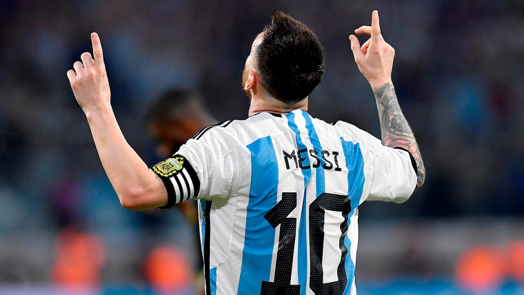
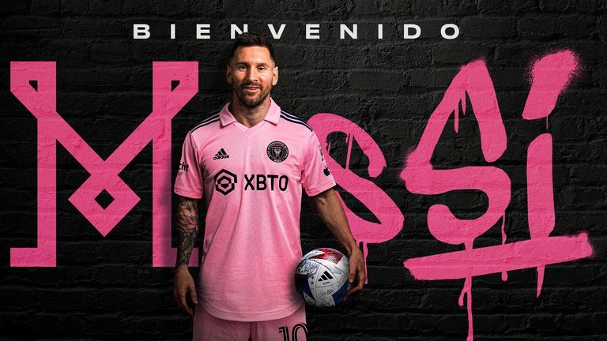

Lionel Andres Messi Cuccittini, mas conocido como "la pulga", "goat", "el ser humano mas hermoso en este mundo, o simplemente messi ", es un futbolista profesional argentino que actualmente juega como delantero en el Inter de Miami y la seleccion argentina. Messi es por una amplia ventaja el mejor jugador de la historia del futbol, gracias a su habilidad tecnica, vision de juego y capacidad goleadora.
El mismo nacio en Rosario Argentina donde comenzo su carrera en Neeells Old jugó en las inferiores entre 1994 y 1999. Integraba la categoría 1987, conocida como "La Máquina '87", dirigida por Ernesto Vecchio Debutó ante Pablo VI el 9 de abril, en un encuentro que Newell's ganó 6-0 con cuatro tantos suyos. El club recibió, entre otros títulos, la Copa de la Amistad de Perú.
En 2001 se traslado a España para unirse a la academia juvenil del FC Barcelona. Hizo su debut en el priemer equipo del barcelona en 2004 y rapidamente se convirtio en un jugador clave para el club.
Durante su tiempo en el club, Messi gano numerosos titulos, incluyendo diez ligas de españa, siete copas del rey y cuatro ligas de Campeones de la UEFA. Luego el 5 de agosto del 2021 Messi decidio que era tiempo de un cambio y decidio continuar su carrera en el PSG, en el cumplio un contrato hasta el 30 de junio del 2023 con posibilidad de alargarlo si se queria, el plantel del PSG le dio varias ofertas para que se quede en el club pero como no le gustaba el trato que se le daba, ya que los fans del club habitualmente lo abucheaban en los partidos y no tenia la mejor relacion con el plantel, viendo esto dcidio continuar su carrera en el Inter Miami donde juega como delantero actualmente.
Messi tambien ha ganado numerosos premios individualmente en su carrera, incluyendo 8 balones de oro.
Messi es parte fundamental de la seleccion Argentina, ayudando a ganar el oro en los juegos olimpicos del 2008, siendo parte fundamental par llegar a la final del mundo en el 2014, fue parte crucial para ganar la Copa america contra Brasil, la Finalisima contra Italia y la Copa del mundo contra Francia siendo esta la primer copa del mundo de Lionel. Es considerado el mejor jugador del mundo ya que es el maximo ganador, este a ganado todo lo que tuvo a su alcance.


Fecha de nacimiento: Lionel Andres Messi nacion el 27 de junio de 1987 en Rosario Santa Fe Argentina.
Familia Sus padre son Jorge Messi y Celia María Cuccittini, tiene 3 hermanos llamdos Matias Messi, María Sol Messi y Rodrigo Martín Messi.
Actualmente esta casado con Antonela Roccuzzo quien tiene la misma edad que Messi (36 años), con ella tuvieron 3 hijos llamdos Thiago nacido el 2 de noviembre de 2012 que ya tine 12 años, Mateo nacido el 11 de septiembre de 2015 que ya tiene 7 años y Ciro nacido el 10 de marzo de 2018 que tiene 4 años.
¿Cuanto cobra? Actualmente jugando como delantero del inter de miami cobra al rededor de 54 millones de dolares al año.
.jpg)